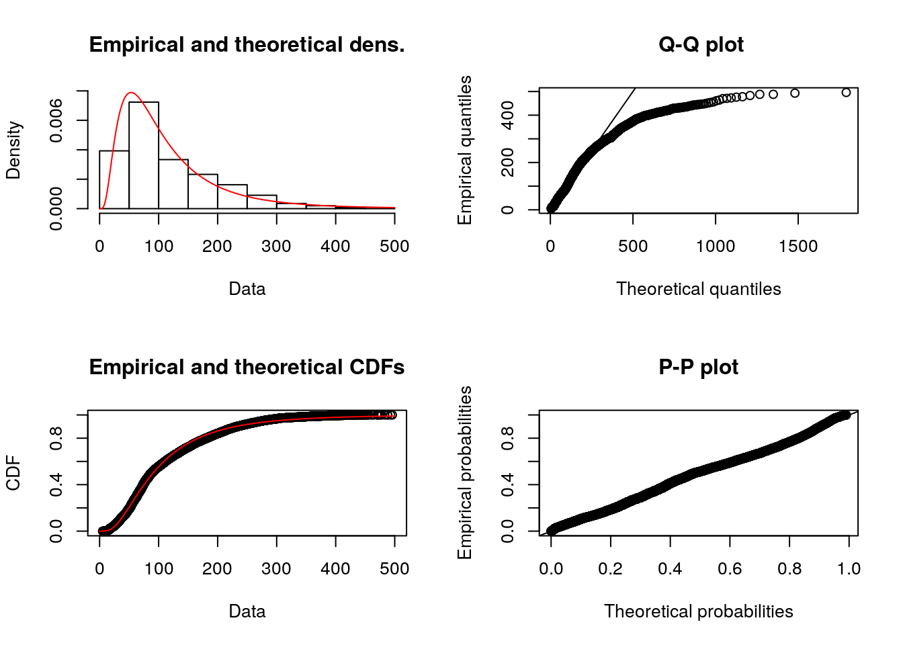
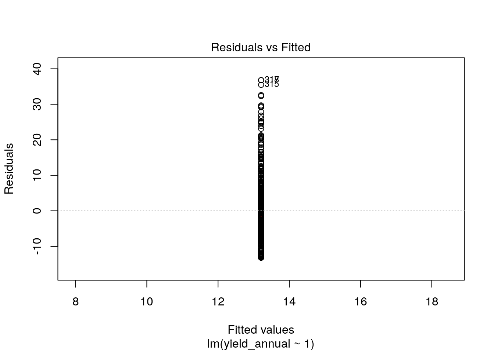

Summary statistics
Objectives: * learn to summarize data with basic measures of central tendancy and spread * learn to fit parametric distributions to data
Data analysis: Sorghum height data
knitr::opts_chunk$set(cache = TRUE)
library(dplyr)##
## Attaching package: 'dplyr'## The following objects are masked from 'package:stats':
##
## filter, lag## The following objects are masked from 'package:base':
##
## intersect, setdiff, setequal, unionlibrary(ggplot2)
theme_set(theme_bw())
#bety_src <- RPostgreSQL::dbConnect(odbc::odbc(), "TERRA-REF traits copy BETYdb")
#bety_src <- src_postgres(dbname = "bety", password = 'bety', host = 'bety.terraref', user = 'bety', port = 5432)
bety_src <- src_postgres(dbname = "bety",
password = 'DelchevskoOro',
host = 'bety6.ncsa.illinois.edu',
user = 'viewer',
port = 5432)
#bety_src <- RPostgreSQL::dbConnect(odbc::odbc(), "TERRA-REF traits viewer")treatments <- tbl(bety_src, 'treatments') %>%
dplyr::select(treatment_id = id , name, definition, control)
managements_treatments <- tbl(bety_src, 'managements_treatments')
managements <- tbl(bety_src, 'managements') %>%
filter(mgmttype %in% c('Fertilization_N', 'Planting', 'Irrigation')) %>%
dplyr::select(management_id = id, date, mgmttype, level, units) %>%
left_join(managements_treatments, by = 'management_id') %>%
left_join(treatments, by = 'treatment_id')
planting <-managements %>%
filter(mgmttype == "Planting") %>%
dplyr::select(treatment_id, planting_date = date, nrate = level)
canopy_height <- tbl(bety_src, 'traits_and_yields_view') %>%
filter(trait == 'canopy_height') %>%
left_join(planting, by = 'treatment_id') %>%
collectggplot(data = canopy_height) +
geom_histogram(aes(x = mean), binwidth = 10) 
Basic Statistics
These are some key statistics that are useful for describing a random variable \(X\):
- Mean \(\bar{x}=\frac{1}{n}\sum_{i=1}^{n}{x_i}\)
- Median
- Variance \(\rm{Var}(X) = \frac{1}{n}\sum_{i=1}^{n}{(x_i-\mu)^2}\)
- Standard Deviation \(\rm{SD}(X) = \sqrt{\rm{Var}(X)}\)
- Coefficient of Variance \(\rm{CV}(X) = \frac{\rm{SD}(X)}{\bar{x}}\)
- Skewness: does the distribution skew left, or right?
- when is median > mean?
- Kurtosis: how fat are the tails of the distribution?
[https://en.wikipedia.org/wiki/Skewness#/media/File:Negative_and_positive_skew_diagrams_(English).svg] [Rodolfo Hermans](https://en.wikipedia.org/wiki/User:Rodolfo_Hermans)
.svg){kind=link}
x <- canopy_height$mean
mean(x)## [1] 115.6012var(x)## [1] 6503.039sd(x)## [1] 80.64143cv <- function(x){
cv <- sd(x)/mean(x)
return(cv)
}
cv(x)## [1] 0.6975827### need to install moments package to compute skewness and kurtosis
# install.packages('moments')
moments::skewness(x)## [1] 1.213562moments::kurtosis(x)## [1] 4.210199height_season1 <- canopy_height %>% filter(grepl('Season 1', sitename))
ggplot(data = height_season1, aes(date, mean)) +
geom_point(alpha = 0.25)
Fitting distributions to data
Probability distributions provide a convenient way of describing a random variable. In many cases, the parameters can be interpereted in a meaningful way (e.g. shape, rate, scale).
#install.packages('fitdistrplus')
library(fitdistrplus)## Loading required package: MASS##
## Attaching package: 'MASS'## The following object is masked from 'package:dplyr':
##
## select## Loading required package: survivaldescdist(x)
## summary statistics
## ------
## min: 5 max: 496
## median: 87.85
## mean: 115.6012
## estimated sd: 80.64143
## estimated skewness: 1.213637
## estimated kurtosis: 4.210691plotdist(x)w <- fitdist(x, 'weibull')
ln <- fitdist(x, 'lnorm')
g <- fitdist(x, 'gamma')
n <- fitdist(x, 'norm')
which.min(c(w$aic, ln$aic, g$aic, n$aic))## [1] 3plot(g)plot(ln)
plot(n)plot(w)
hist(x, probability = TRUE, ylim = c(0, 0.012))
lines(sort(x), dgamma(sort(x), g$estimate['shape'], g$estimate['rate']))
lines(sort(x), dlnorm(sort(x), ln$estimate['meanlog'], ln$estimate['sdlog']), col = 2)
lines(sort(x), dnorm(sort(x), n$estimate['mean'], n$estimate['sd']), col = 3)
lines(sort(x), dnorm(sort(x), w$estimate['shape'], n$estimate['scale']), col = 3)mean(x)## [1] 115.6012plot(x)lm(x~1)##
## Call:
## lm(formula = x ~ 1)
##
## Coefficients:
## (Intercept)
## 115.6Regression
Objectives:
- learn to convert deterministic functions into statistical models
- fit parameters
- evaluate key assumptions
- learn to interpret model summaries / parameters / output
- use model comparison to test hypotheses
We are starting with hypotheses / preidctions that the yield of two perennial grasses, Miscanthus spp. and Switchgrass (Panicum spp.)) depend on age, fertilization rate, and genotype. We expect that the functional form of the response to nitrogen and age will either be monotonically increasing, asymptotic, or hump-shaped. This follows LeBauer et al 2017 using a subset of the data that is balanced data from Miscanthus and Switchgrass field trials within Il and across the US (Arundale et al 2012 and Arundale et al 2014)
library(traits)
options(
betydb_url = "https://betydb.org",
betydb_api_version = 'beta')
yields <- betydb_query(table = 'search',
trait = 'Ayield',
limit = "none")## grass_yields <- yields %>%
filter(genus %in% c('Miscanthus', 'Panicum')) %>%
dplyr::rename(yield_annual = mean)We are going to use a version of this dataset that already has climate data: MAP (Mean Annual Precipitation) and Mean Annual Temperature (MAT)
grass_yields <- read.csv('data/grass_yield.csv')
#lattice::splom(grass_yields)
#pairs(grass_yields, pch='.')
#grass_yields <- grass_yields %>% filter(genus %in% c("Miscanthus", "Panicum"))h0 <- lm(yield_annual ~ 1, data = grass_yields)
plot(h0$fitted.values, h0$residuals)## Warning in plot.window(...): relative range of values = 21 * EPS, is small
## (axis 1)hist(h0$residuals)
plot(h0, which = c(1,2))
Data Transformation
grass_yields <- grass_yields %>% mutate(log_yield = log10(yield_annual + 1))Why add 1 to yield_annual? How does this affect interpretation?
h0 <- lm(log_yield ~ 1, data = as.data.frame(grass_yields))
plot(h0$fitted.values, h0$residuals)
hist(h0$residuals)
extending the models
mod1 <- lm(yield_annual ~ genus, data = grass_yields)
summary(mod1)##
## Call:
## lm(formula = yield_annual ~ genus, data = grass_yields)
##
## Residuals:
## Min 1Q Median 3Q Max
## -17.195 -7.175 -0.200 5.087 32.605
##
## Coefficients:
## Estimate Std. Error t value Pr(>|t|)
## (Intercept) 10.351 2.736 3.783 0.000178 ***
## genusMiscanthus 7.044 2.821 2.496 0.012938 *
## genusPanicum -0.947 2.819 -0.336 0.737072
## genusroot-mis 1.576 3.870 0.407 0.684063
## ---
## Signif. codes: 0 '***' 0.001 '**' 0.01 '*' 0.05 '.' 0.1 ' ' 1
##
## Residual standard error: 9.479 on 406 degrees of freedom
## Multiple R-squared: 0.147, Adjusted R-squared: 0.1406
## F-statistic: 23.31 on 3 and 406 DF, p-value: 6.083e-14methods(class = class(mod1))## [1] add1 addterm alias anova
## [5] attrassign boxcox case.names coerce
## [9] confint cooks.distance deviance dfbeta
## [13] dfbetas drop1 dropterm dummy.coef
## [17] effects extractAIC family formula
## [21] fortify hatvalues influence initialize
## [25] kappa labels logLik logtrans
## [29] model.frame model.matrix nobs plot
## [33] predict print proj qqnorm
## [37] qr residuals rstandard rstudent
## [41] show simulate slotsFromS3 summary
## [45] variable.names vcov
## see '?methods' for accessing help and source codeAssumptions
par(mar = c(4, 4, 2, 2), mfrow = c(1, 2)) #optional
plot(mod1, which = c(1, 2)) # "which" argument optional
- residuals vs fitted: are residuals distributed consistently along axis of predictor variables?
- qqplot: are errors distributed normally?
Extending the model
mod3 <- lm(yield_annual ~ genus + mat + map, data = grass_yields)
mod6 <- lm(yield_annual ~ genus + mat + map + age + fertilizer_n + planting_density, data = grass_yields)
summary(mod3)##
## Call:
## lm(formula = yield_annual ~ genus + mat + map, data = grass_yields)
##
## Residuals:
## Min 1Q Median 3Q Max
## -18.768 -6.973 -0.174 5.342 32.643
##
## Coefficients:
## Estimate Std. Error t value Pr(>|t|)
## (Intercept) 8.436399 4.404576 1.915 0.0562 .
## genusMiscanthus 7.275047 2.936643 2.477 0.0136 *
## genusPanicum -0.770094 2.938785 -0.262 0.7934
## genusroot-mis 1.214756 4.015827 0.302 0.7624
## mat -0.336335 0.214605 -1.567 0.1178
## map 0.005373 0.003698 1.453 0.1470
## ---
## Signif. codes: 0 '***' 0.001 '**' 0.01 '*' 0.05 '.' 0.1 ' ' 1
##
## Residual standard error: 9.472 on 404 degrees of freedom
## Multiple R-squared: 0.1525, Adjusted R-squared: 0.142
## F-statistic: 14.54 on 5 and 404 DF, p-value: 4.148e-13Comparing models
mod4 <- lm(yield_annual ~ genus + mat + map + age, data = grass_yields)
AIC(mod1, mod4, mod6)## df AIC
## mod1 5 3013.754
## mod4 8 2904.407
## mod6 9 2884.269BIC(mod1, mod4)## df BIC
## mod1 5 3033.835
## mod4 8 2936.536Interactions
mod4 <- lm(yield_annual ~ genus * age + mat + map, data = grass_yields)how do you know which interactions to include?
anova(mod1, mod4)## Analysis of Variance Table
##
## Model 1: yield_annual ~ genus
## Model 2: yield_annual ~ genus * age + mat + map
## Res.Df RSS Df Sum of Sq F Pr(>F)
## 1 406 36480
## 2 400 24662 6 11818 31.947 < 2.2e-16 ***
## ---
## Signif. codes: 0 '***' 0.001 '**' 0.01 '*' 0.05 '.' 0.1 ' ' 1refining the model
library(MASS)
mod4 <- lm(yield_annual ~ genus * age + genus * mat + genus * map, data = grass_yields)ggplot(data = grass_yields) +
geom_histogram(aes(mean, y = ..density.., fill = genus), position = 'dodge', binwidth = 5)x <- grass_yields$yield_annual
mean(x)
var(x)
sd(x)
cv <- function(x){
sd(x)/mean(x)
}
cv(x)
library(ggplot2)
ggplot() +
geom_histogram(aes(x), bins = 25)
u <- runif(1000)
sum(u < 0.11)
z <- ifelse(u < 0.11, runif(1000), rgamma(1000, 6, 1))
yield <- grass_yields$yield_annual
x <- seq(0, 50, by = 0.1)
hist(yield, breaks = 25, probability = TRUE)
lines(x, dnorm(x, mean = mean(yield), sd = sd(yield)))
yield_subset <- yield[yield>1]
hist(yield_subset, breaks = 25, probability = TRUE)
lines(x, dnorm(x, mean = mean(yield), sd = sd(yield)))
w <- fitdist(yield_subset, distr = 'weibull')
ln <- fitdist(yield_subset, distr = 'lnorm')
g <- fitdist(yield_subset, distr = 'gamma')
n <- fitdist(yield_subset, distr = 'norm')
plot(g)
plot(n)
plot(ln)
names(g)
g$estimate
n$loglik
g$loglik
x <- yield_subset
hist(x, probability = TRUE, ylim = c(0, 0.10))
lines(sort(x), dgamma(sort(x), g$estimate['shape'], g$estimate['rate']))
lines(sort(x), dlnorm(sort(x), ln$estimate['meanlog'], ln$estimate['sdlog']), col = 2)
lines(sort(x), dnorm(sort(x), n$estimate['mean'], n$estimate['sd']), col = 3)
unique(grass_yields$genus)
grass_yields$genus <- ifelse(grass_yields$genus == 'Freedom-',
"Miscanthus",
grass_yields$genus)
grass_yields <- grass_yields %>% filter(!genus == 'root-mis')
theme_set(theme_bw())
ggplot(data = grass_yields) +
geom_histogram(aes(x = yield_annual), binwidth = 4) +
facet_wrap(~genus)
ggplot(data = grass_yields) +
geom_point(aes(x = year, y = yield_annual)) +
facet_wrap(~genus)
ggplot(data = grass_yields) +
geom_point(aes(x = age, y = yield_annual)) +
facet_wrap(~genus)
ggplot(data = grass_yields) +
geom_point(aes(x = year, y = map)) +
facet_wrap(~lat)
ggplot(data = grass_yields) +
geom_point(aes(x = year, y = mat)) +
facet_wrap(~lat)
ggplot(data = grass_yields) +
geom_point(aes(x = lon, y = lat, color = genus), alpha = 0.25, position = 'jitter')
lattice::splom(grass_yields)
lines(sort(x), dweibull(sort(x), w$estimate['shape'], w$estimate['scale']), col = 4)
h0 <- lm(yield_annual ~ 1, data = grass_yields)
hist(grass_yields$yield_annual)
abline(v = mean(grass_yields$yield_annual))
plot(h0, which = c(1))
plot(h0, which = c(2))
## log
## power (incl. sqrt)
## Box-Cox transform
## rank
library(dplyr)
grass_yields <- grass_yields %>%
mutate(sqrt_yield = sqrt(yield_annual))
h0 <- lm(sqrt_yield ~ 1, data = grass_yields)
plot(h0, which = c(1))
plot(h0, which = c(2))
h1 <- lm(sqrt_yield ~ 1 + genus, data = grass_yields)
plot(h1, which = c(1))
plot(h1, which = c(2))
summary(h1)
class(h1)
methods(class = 'lm')
plot(h1$fitted.values, h1$residuals)
tmp_grass <- cbind(grass_yields, residuals = h1$residuals)
h1.5 <- lm(residuals ~ fertilizer_n, data = tmp_grass)
summary(h1.5)
h2 <- lm(sqrt_yield ~ genus + fertilizer_n,
data = grass_yields)
summary(h2)
h3 <- lm(sqrt_yield ~ 1 + genus + fertilizer_n + genus : fertilizer_n, data = grass_yields)
# h3 <- lm(sqrt_yield ~ 1 + genus + fertilizer_n + genus : fertilizer_n, data = grass_yields)
# h3 <- lm(sqrt_yield ~ 1 + genus * fertilizer_n , data = grass_yields)
library(ggplot2)
ggplot(data = grass_yields) +
geom_point(aes(fertilizer_n, sqrt_yield, color = genus )) +
geom_abline(aes(slope = 0.0125, intercept = 3.2),color = 'pink') +
geom_abline(aes(slope = 0.0125 - 0.0066, intercept = 3.2 - 0.65),color = 'blue')
ggplot(data = grass_yields) +
geom_point(aes(fertilizer_n, sqrt_yield, color = genus )) +
geom_abline(aes(slope = 0.0125, intercept = 3.2),color = 'pink') +
geom_abline(aes(slope = 0.0125 - 0.0066, intercept = 3.2 - 0.65),color = 'blue')
summary(h3)
ggplot(data = grass_yields) +
geom_point(aes(age, sqrt_yield, color = genus ))
h5 <- lm(sqrt_yield ~ 1+ genus * mat,
data = grass_yields )
summary(h5)
h6 <- lm(sqrt_yield ~ 1+ genus * mat + genus * fertilizer_n + genus *age,
data = grass_yields )
h7 <- lm(sqrt_yield ~ 1+ genus + genus ,
data = grass_yields )
summary(h6)
plot(h6, which = c(1))
AIC(h0)
library(MASS)
stepAIC(h6, direction = 'both')
h8 <- lm(formula = sqrt_yield ~ genus + fertilizer_n + age + I(age^2) + genus:fertilizer_n +
genus:age, data = grass_yields)
plot(h8)
?stepAIC
lapply(list(h0, h1, h3, h5, h6, h8), AIC)Issues with stepAIC
https://stats.stackexchange.com/questions/20836/algorithms-for-automatic-model-selection
grass_yields <- read.csv('data/grass_yield.csv') %>%
filter(genus %in% c("Miscanthus", "Panicum")) %>%
mutate(sqrt_yield = sqrt(yield_annual), genus = as.character(genus))Model fitting
install.packages('caret')
require(caret)
ctrl <- trainControl(method = "repeatedcv", repeats = 10, savePred = TRUE)
train_lm_yield <- train(yield_annual ~ genus * fertilizer_n + genus * poly(age, 2) + genus * mat + genus * map,
data = grass_yields,
preProcess = 'BoxCox',
method = "lmStepAIC",
direction = 'both',
trControl = ctrl)
class(train_lm_yield$finalModel$call)Alternative: lasso
yield_lasso <- train(yield_annual ~ genus * fertilizer_n + genus * poly(age, 2) + genus * mat + genus * map,
data = grass_yields,
preProcess = 'BoxCox',
method = "glmnet")
varImp(lasso_yield)
library(sjPlot)
sjPlot::sjp.lm(train_lm_yield$finalModel)
summary(train_lm_yield)Random Effects
## create a category for site
grass_yields <- grass_yields %>%
mutate(site = as.factor(lat))
library(lme4)
grass_re <- lme4::lmer(sqrt_yield ~ fertilizer_n + age + I(age^2) +
genus:fertilizer_n + genus:age + (1 | site),
data = grass_yields)
sjPlot::sjp.lmer(grass_re)the Predict method
take an argument ‘new data’ and predict output from the model
grass_lm <- lm(sqrt_yield ~ genus * fertilizer_n + poly(age, 2), data = grass_yields)
newdata <- expand.grid(fertilizer_n = 1:5*100, age = 5, genus = 'Miscanthus', year = 2000)
y_n <- predict(grass_lm, newdata = newdata)
plot(1:5*100, y_n)The danger of ‘out of sample prediction’
newdata2 <- expand.grid(fertilizer_n = 100, age = 1:20, genus = 'Miscanthus', year = 2000)
y_age <- predict(grass_lm, newdata = newdata2)
plot(1:20, y_age)
References
Arundale R (2012) The higher productivity of the bioenergy feedstock Miscanthus x giganteus relative to Panicum virgatum is seen both into the long term and beyond Illinois (Doctoral dissertation, University of Illinois at Urbana-Champaign). http://hdl.handle.net/2142/34422.
Arundale RA, Dohleman FG, Heaton EA, Mcgrath JM, Voigt TB, Long SP (2014) Yields of Miscanthus × giganteus and Panicum virgatum decline with stand age in the Midwestern USA. Global Change Biology Bioenergy, 6, 1–13. http://onlinelibrary.wiley.com/doi/10.1111/gcbb.12077/full
LeBauer, D., Kooper, R., Mulrooney, P., Rohde, S., Wang, D., Long, S. P. and Dietze, M. C. (2017), BETYdb: a yield, trait, and ecosystem service database applied to second-generation bioenergy feedstock production. GCB Bioenergy. doi:10.1111/gcbb.12420
Fitting mathematical models
functional forms https://ms.mcmaster.ca/~bolker/emdbook/book.pdf
The following is an illustrative collection of the mathematical functions based on those described in Bolker 2009.
foo.null <- lm (y ~ 1, ...)
foo.poly1 <- lm(y ~ poly(x,1),...)
foo.poly2 <- lm(y ~ poly(x,2)+poly(x2,2),...)
foo.poly3 <- lm(y ~ poly(x,3),...)
foo.mm <- nls ( y~ (a*x)/(b + x) , start = list(a=1, b=1),...)
foo.ne <- nls ( y ~ a*exp(-b*x) , start = list(a=1, b=1),...)
foo.ricker <- nls ( y ~ a*x*exp(-b*x) , start = list(a=1, b=1),...)
foo.powricker <- nls ( y ~ b * (x/a * exp(1 - x/a))^alpha , start = list(a=1, b=1, alpha = 1),...)
foo.modlog <- nls ( y ~ exp(eps * (phi - x))/(1+exp(beta * eps * ( phi - x)))
, start = list(eps = 1, beta = 1, phi = 15),...)
foo.aov <- aov( y ~ x, ...)Now … this leads us to mechanistic modeling
Next lecture on Crop modeling